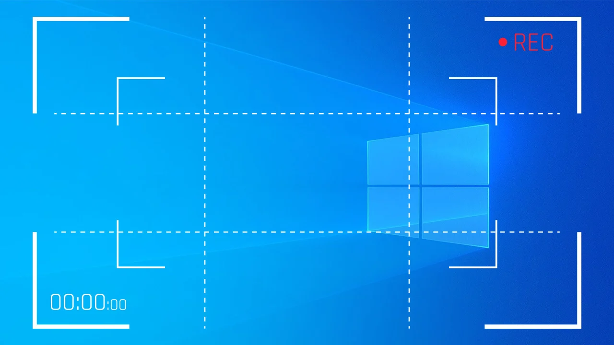

<div class="ng-screenshot">
  <div #screen>
    <h1>Screenshot demo with ngx-capture</h1>
    <p>this button demonstrates taking screenshot using crop functionality with ngx-capture</p>
    
      <app-img></app-img>
  </div>
  <button (click)="saveImage()">Take Ngx Screenshot</button>
</div>
